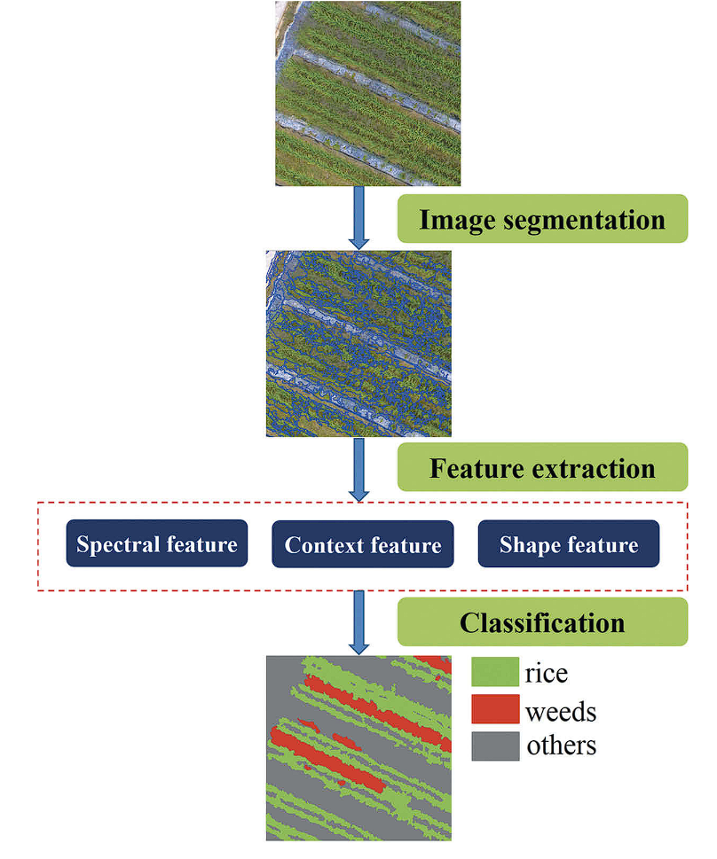

7 Classification II
7.1 Classification II: OBIA, Sub-pixel Analysis and Accuracy
This week continues on last week’s content on image classification. The last type of image classification is Object-Based Image Analysis which focuses on identifying objects based on similarity or differences in pixels; a group of pixels that share common characteristics is called a superpixel, which is the output of many OBIA algorithms such as Simple Linear Iterative Clustering (SLIC).
Sub-pixel analysis however, looks at how a single pixel may represent different proportions of land use; this can be done using Spectral Mixture Analysis (SMA), based on the linear sum of endmembers weighted by the proportions of endmembers. This can yield meaningful results including super-resolution mapping, spectral unmixing or soft classification. However, sub-pixel analysis still suffers from several challenges which includes endmember selection problems, uncertainty and spectral mixing complexity amongst many others. Researchers has thus developed new algorithms and adopted other machine learning methods to help combat these issues.
The rest of the lecture covers the idea of accuracy of the image classification - which is usually seperated into:
- Producer Accuracy - correctly classified pixels to ground truth
- User Accuracy - correctly classified pixels relative to all others classified as a particular land cover
- Overall Accuracy - combined fraction of correctly classified pixels across all land covers
Some additional notes on accuracy:
Producer and user accuracy are related to each other - it is not possible to get high accuracies in both
There is no ‘right’ choice in accuracy assessments - it depends on what the goal of the research is
I previously used kappa in my own image classification project but realised now that it is not a good measure due to its arbitrary scale and how it varies based on levels of accuracy
Receiver Operating Characteristic Curve is an alternative which covers the weaknesses of other accuracy measures by incorporating true negatives and the whole matrix, and enables comparison between different models
The last part of the lecture covers cross validation
By partitioning the dataset into training and testing, we can measure the accuracy based on iterative partitioning; some examples include k-folds and Leave-One-Out cross validation methods
Spatial autocorrelation also exists between training and testing because the training data can give a ‘sneak peak’ on the testing data if the spatial points are close to one another - this inflates the overall accuracy of the classifier
Spatial cross validation can account for this issue through spatial partitioning of training/testing data; methods include spatial k-folds, spatial blocking, spatial buffer, or even a spatial Leave-One-Out cross validation

7.2 Applications
While reading several papers on object based image classification (OBIA), I came across many papers that stated how pixel-based image classification is declining since 2010s because spatial resolution of images have improved, which shifts research towards OBIA. Even more recently, developments in deep learning and convolutional neural networks (CNN) produced prediction maps with improved accuracy. With higher resolution remote sensing imagery being commercially available from either satellite or drone sources, OBIA methods become increasingly important as they open up new applications and tools for monitoring and management of resources.
For example, novel use applications of OBIA and deep learning methods for agriculture weed mapping was used in UAV drone imagery in China by Huang et al. (2020) to spray site-specific pesticides which reduces costs of pesticides and creates less environmental harm from uniform spraying.

One important learning that I picked from the paper is the importance of optimizing the hyper-parameters of the classifiers; the authors used a mixture of trial-and-error as well as existing research to support their choice of hyper-parameters. The authors also used context specific information (i.e looking for weeds) to help extracting useful information from the OBIA classification - for example shape and size was not a concern for them as weeds come in irregular sizes and shapes, but colour and textures are useful information for classification.
While the authors managed to compare between using OBIA and deep learning methods for identifying weeds, the research was a technical paper that focused on the algorithms and specifics of identification, but there were no mentions of the weed spraying management plan, or how the new method would be applied in real life. It goes back the the class in week 4 where research should be linked to existing policies or real-life applications.
7.3 Reflections
This week’s content (around 70 slides) were covered within a span of one hour, which is a lot of information and it took me a long time researching and reading to get a sense of what classification entails, how to measure accuracy and the current debates behind different measures of accuracy. The general idea I get from reading is that pixel-based analysis covered in the previous week is not as widely used and OBIA is hailed as a ‘superior’ method in current literature due to higher resolution images we are able to obtain from open source databases.
There is also seem to be a lot of development of using deep learning (DL) methods in remote sensing applications, with CNNs being used in OBIA and even sub-pixel analysis. However, with the introduction of these novel methods means that there is a need to revise traditional measures of accuracy in remote sensing. Maxwell et al. (2021) summarises some of the differences and similarities between traditional RS articles vs novel DL RS articles, where they concluded that newer DL RS papers have abandoned traditional RS accuracy terminologies, instead using computer science/AI aligned terminologies and accuracy assessment for their communication such as F1 scoring (recall/precision) and Intersection-Over-Union (IoU).
With the accelerating growth of AI in recent years, remote sensing is also impacted by the introduction of new algorithms, models and new methods of accuracy assessments are being introduced; I believe there is a greater need for the remote sensing community to standardise terminologies, notations and provide more details on the methodology (such as open-source codes).
7.4 References
Huang, H., Lan, Y., Yang, A., Zhang, Y., Wen, S. and Deng, J., 2020. Deep learning versus Object-based Image Analysis (OBIA) in weed mapping of UAV imagery. International Journal of Remote Sensing, 41(9), pp.3446-3479.
Lovelace, R., Nowosad, J. and Muenchow, J., 2019. Geocomputation with R. Chapman and Hall/CRC.
Maxwell, A.E., Warner, T.A. and Guillén, L.A., 2021. Accuracy assessment in convolutional neural network-based deep learning remote sensing studies—Part 1: Literature review. Remote Sensing, 13(13), p.2450.